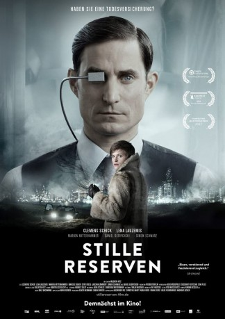
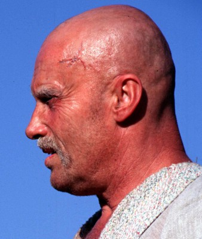

#11521 Stille Reserven
 
 IMDB-Wertung: 5.3 / 10
IMDB-Wertung: 5.3 / 10  Metascore: 0
Metascore: 0 
Wien, in nicht allzu ferner Zukunft: Vincent Baumann arbeitet als Agent für Todesversicherungen und fügt sich willig in das vorherrschende gnadenlose System. Doch dann verliert er seine Stellung und bekommt am eigenen Leibe zu spüren, wie es sich in dieser Gesellschaft anfühlt, durchs Raster zu fallen. Zuerst kämpft er noch darum, seine alte Stellung und seine alten Privilegien zurückzuerobern. Doch nach und nach erkennt er, dass Einkommen und Erfolg nicht das Einzige sind, was zählt, und ist langsam bereit, auch andere Werte zu akzeptieren, für die in seiner bisherigen Weltanschauung kein Platz war. So öffnet er sein Herz einem anderen Menschen, einer Frau namens Lisa Sokulowa. Für die beiden gibt es keine Zukunft, aber sie haben dennoch Hoffnung, das System überlisten zu können…
Jahr: 2016
Dauer: 91 Minuten
FSK: 12
Land: Österreich Studio: Camino FilmverleihTonspuren: - , - ,
Untertitel:
Auflösung: 1080p (1920x1040) Größe: 6645 MB
Genre: Sci-Fi
Regisseur: Valentin Hitz
Drehbuch: Valentin Hitz, Oda Schaefer, Robert Buchschwenter
Soundtrack: Balz Bachmann
Darsteller:
 Clemens Schick als Vincent Baumann
Clemens Schick als Vincent Baumann- Lena Lauzemis als Lisa
-  Daniel Olbrychski als Wladimir Sokulov
- Marcus Signer als Gerhard Frei
 Simon Schwarz als Johannes Dietrich
Simon Schwarz als Johannes Dietrich Stipe Erceg als Philip Kessler
Stipe Erceg als Philip Kessler- Dagmar Koller als Eleny Hoffmansthal
- Stefan Gorski als Operator
- Viktor Krüger als Einsatzleiter SWAT Team
- Marion Mitterhammer als Diana Dorn
- Martin Reik als Novack
- Jaschka Lämmert als Maria Dietrich
- Markus Allram als Zuberer
- Ilhami Arslan als Gemüsehändler
- Sasa Barbul als Angehöriger
- Stefan Bernhard als Aktivist
- Bernhard Brenner als Reisinger
- Stanislaus Dick als Laborant
- Gerhard Fitzky als Bankangestellter
- Manfred Fuchs als Bodyguard
- Jakob Hofer als Frank Gruber
- Alexander Hoffmann als Security
- Christopher Hoffmann als Wächter Geriatrie
- Helga Illich als Sterbende Frau
- Lukas Johne als Soldat
- Paul Kreshka als Butler
- Sandra Littomericky als Nachrichtensprecherin
- Sandra Littomericzky als Nachrichtensprecherin
- Christoph Luser als Christopher Kowalski
- Stefan Matousch als Vizedirektor
- Gerhard Naujoks als Abteilungschef
- Dirk Nocker als Zauberer Andreas
- David Oberkogler als Versicherungsagent
- Sebastian Pass als Bauchladenhändler
- Manfred Stadlmann als Aufseher Geriatrie
- Michael Thomas als Schrotthändler
- Julius Toth als Janovski
- Roland Trnka als Businessman
- Arthur Werner als Portier EAR
- Martin Müller als Techniker Kontrollraum (uncredited)
Datei: X:\2016(N-Z)\Stille Reserven (2016, FSK12, 1920x1040).mkv seit 22.07.2019
Festplatte: Gemischt-01+Anime
 Es gibt insgesamt 182 Filme in der Gruppe '2016(N-Z)'
Es gibt insgesamt 182 Filme in der Gruppe '2016(N-Z)'